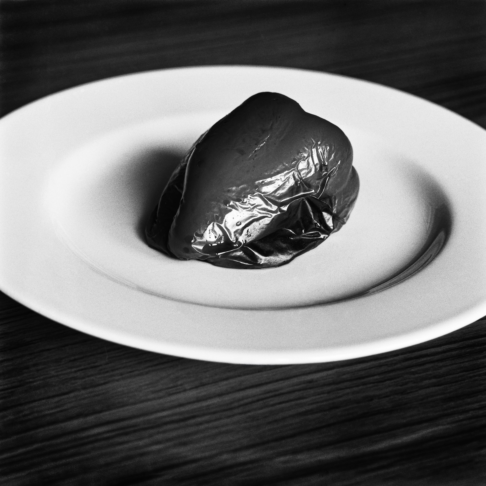

film review
08/12/2024
Kentmere Pan 100 vs Kodak Tmax 100
In the early 90’s, I started to get interested in black and white photography and started to shoot with medium format cameras on film. The first film stock I’ve been using was Kodak Plus X (125 iso). It was a nice classic film with a lot of grain.
Then Kodak came with the Tmax technology and I switched to the Tmax 100. Since then it has always been my favorite slow speed film and I shot a lot of rolls on this stock, processed by a variety of developers.
I always loved the result from this film in terms of sharpness, tonal range and contrast. Feeling comfortable with the film stock is really important to me.
Here we are now in 2024. The prices of B&W films are increasing more and more. For one roll of Kodak Tmax 100 you need to pay about 10 euros. So I’ve decided to do some tests with other film manufacturers trying to find an alternative to my favorite film ever.

After reviewing articles on the web, I made the choice to try the Kentmere Pan 100. I’ve been using this film more than a year now, under different light conditions and with different developers and I would like to share with you some reasons why you should give it a try too:
1. The price: one roll of Kentmere Pan 100 in 120 is around 6 euros. So it is a significant cost difference comprare to the Kodak Tmax. This is not the cheapest film on the market, Foma can be less expensive, but you can get more roll for your money.
2. Overall quality: this film stock is made by Harman Technology, the same manufacturer that makes all Ilford film and paper products. The film base is good and will produce very clear and flat negatives (no curling).
3. Easy to use: Kodak Tmax will require more attention with exposure and processing to get the best results. I found Kentmere a bit more flexible.
4. Classic look: at the beginning of the article, I was mentioning the Kodak Plus X. Kentmere has a classic emulsion so it won’t produce the same grain structure as the Tmax. But depending on the developer you use, the grain can be very discrete. The result is certainly less “clean” than the Tmax but with a bit more soul.
5. Highlight handling: the film itself has less contrast than the Kodak, so maybe it helps with highlights. With Tmax, with some developers (as HC100) highlights could be hard to manage and go very dark on the negative. With Kentmere, I felt there was more room for highlights. Especially when using Xtol for developer
6. Versatility: The base iso is 100 but I shot some rolls at 50 and 200 iso without any issues.
7. Long exposure: I’ve made some tests with long exposure (night photography). The film was processed with the two bath development technique, known for giving good results in this case. And the negatives were simply incredible. So many details both in highlight and shadow.
8. Studio: Using strobes or LEDs I found it easy to use and I didn’t change so much the way I set up the light or meter. Yes the film has less contrast to start with but it’s easy to add some during post production.
In conclusion, I find this film is a valid option to replace the kodak Tmax 100. It won’t give you the exact same look or quality but I think it is a very good budget alternative.
All images presented in this article were processed by myself and DSLR scan with a Nikon D800. Contrast and luminance were adjusted in Capture One. You can find more samples of my black and white analog photography in this section.
Have fun with films !!!
